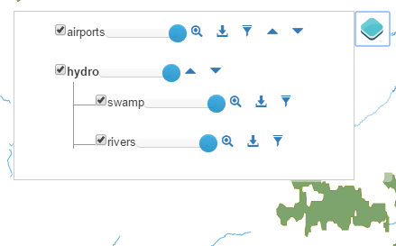
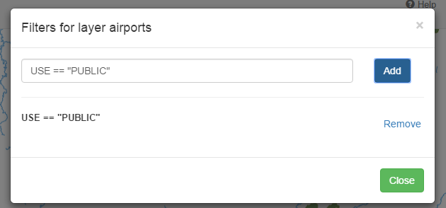
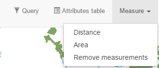
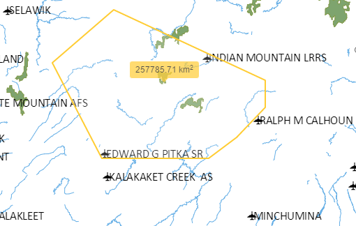
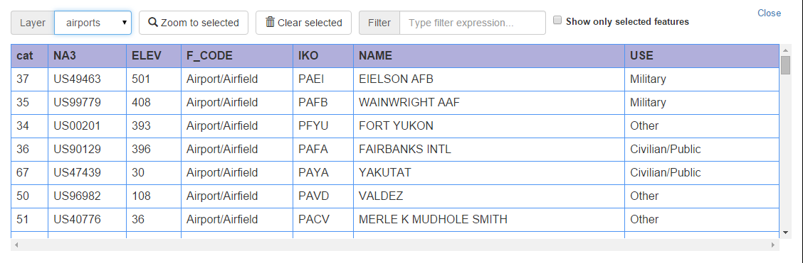
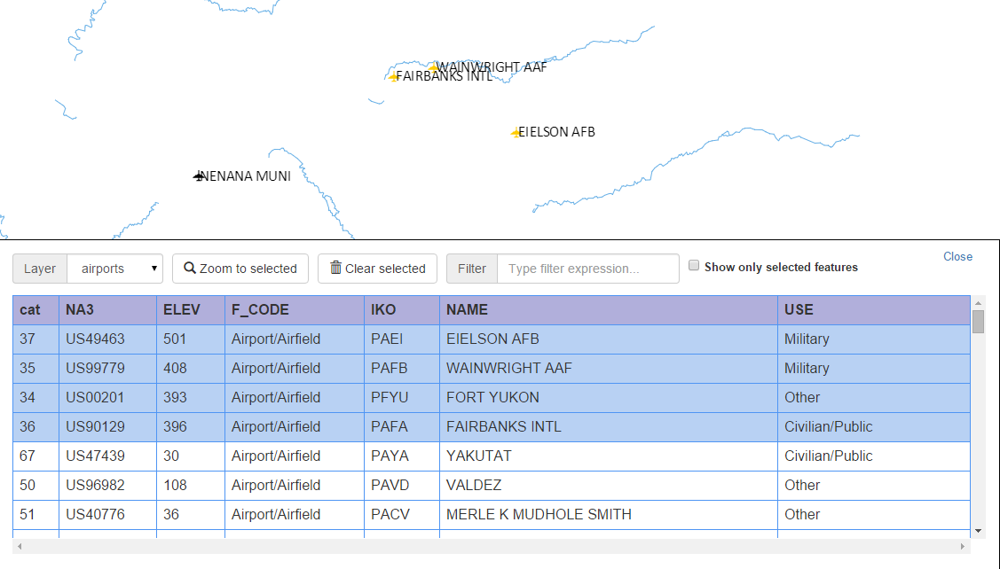
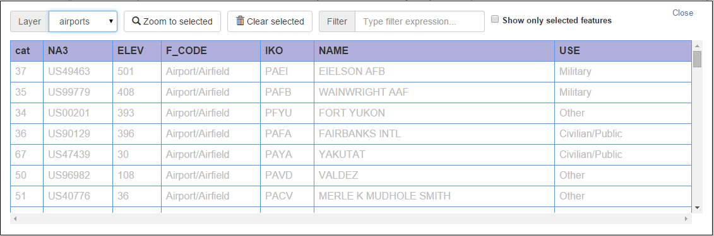
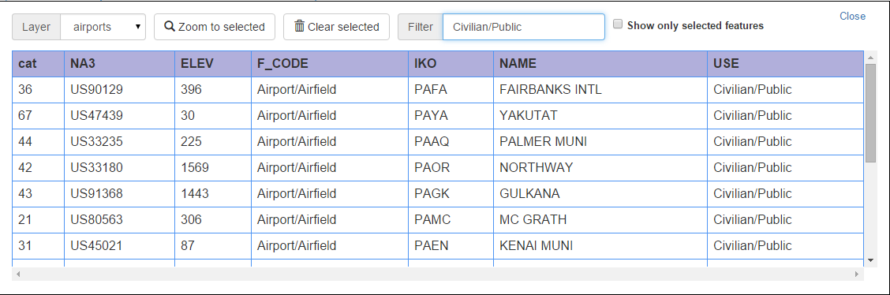

Help
This document describes the elements available in this web map application and their usageLayers list
The layer list shows the layers in the application and allows managing them. Pass the mouse pointer over the layers list icon or click on it to display the layers list
A check box is shown along the name of each layer, which allows to toggle its visibility
.
The opacity of the layer can be controlled using the opacity slider.
Rendering order of layers can be modified using the arrows to bring a given layer up or down the layers list. Layers on top are rendered at the end, and will have rendering priority.
For vector layers, a Zoom to button will be available. Clicking on it will cause the map extent to be changed to the minimum extent that covers all the features in the layer.
A download button will also be available for vector layers, allowing to download the layer as a GeoJson file
Rendering filters can be added to vector layers. Clicking on the filter icon will show the filter dialog
To add a new filter, enter its expression in the text box and click the Add button.
All active filters are listed below the text box. Click on the Remove link to remove a filter.
Filters use the following syntax of the Filtrex library, as described here. Attribute names are used as variables. Attribute names are case-sensitive
Measure
MEasure tools are used to get area and distance measurements over the map canvas.
Two tools are available: Distance and Area. Select the distance tool to measure distances. Click on the map to set the points that define the line to measure.

When you have finished defining the line, double-click to end.

Select the area tool to measure areas. Click on the map to set the points that define the polygon to measure.

When you have finished defining the line, double-click to end.
To remove the lines and polygons created by the distance and are tools, select the
Remove measurements
menu.Selection
Selection tools are used to select features in the vector layers of the web app that allow selection. Two selection tools are available: Select by Polygon and Select by Rectangle
If the Select by Polygon tool is active, you can click on the map canvas to define polygon vertices. Close the polygon by double-clicking. When the polygon is closed, all features in all selectable layers which are within the polygon will get selected. Previous selection, if it exist will be removed.
If the Select by Rectangle tool is active, you can click and drag to define a rectangle. All features in all selectable layers which are within the polygon will get selected. Previous selection, if it exist will be removed.
Selected features will be rendered in a yellow color, to differentiate them from non-selected ones.
Attributes table
The attributes table shows the attributes of features in the vector layers of the application.
The dropdown list in the attributes table is used to select the layer for the list of available vector layers.
If selection is allowed for the current layer in the attributes table, features can be selected in the table, by clicking on the corresponding row. The corresponding feature will be highlighted in the canvas. Selected features are also highlighted in the table itself. Selection of multiple features is available using the Ctrl or Shift keys while clicking on a row.
If you want to see only the features that are selected
The selection for the current layer can be cleared by clicking the Clear selection button.
Clicking on the Zoom to selected button will cause the map to be zoom the the minimum extent that covers all the selected features.
When a rendering filter is applied to the layer, all features will be shown in the attributes table. However, features that do not pass the rendering filters and are not painted in the map will be shown with a lighter font color in the attributes table.
The list of features in the table can be restricted by using a filter. To show only those features that contain a given string in any of their attributes, type the filter string in the filter box.
